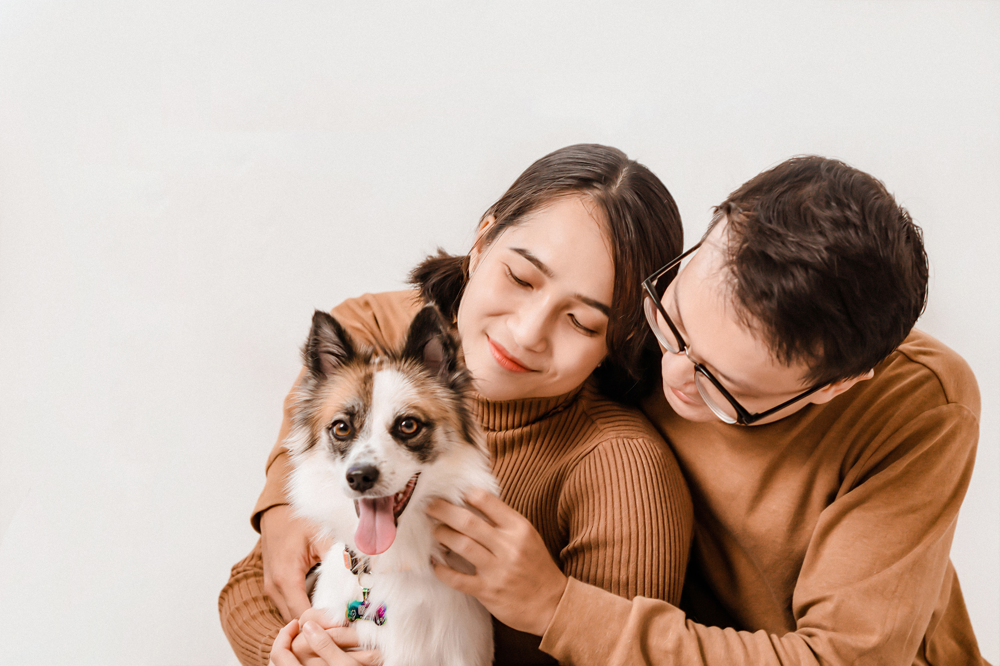

🐶 Para nuestros amigos perrunos
Un perfil digital que ayuda a compartir información importante y facilitar el contacto con su familia.
Una conexión que puede traerlos de vuelta a casa
PETLINK conecta a las mascotas con sus familias mediante un collar con código QR y una plataforma web. Si alguien encuentra a tu mascota, puede escanear su código para consultar su perfil y comunicarse contigo.
💚 Fácil de usar desde el navegador de un celular, sin instalar una aplicación.

Una forma sencilla de ayudar a que una mascota encontrada pueda volver con las personas que la quieren.
Un perfil digital que ayuda a compartir información importante y facilitar el contacto con su familia.

También los gatos pueden tener su identificación QR y un perfil con sus datos esenciales.
Tres pasos para acercar una mascota a su hogar.
La persona que encuentra a la mascota escanea el código QR con su celular.
Consulta la foto, las características y el estado registrado de la mascota.
Puede utilizar el enlace de WhatsApp del perfil para comunicarse con su propietario.